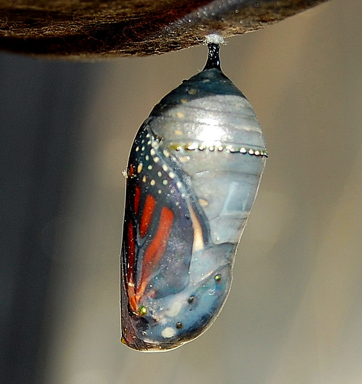
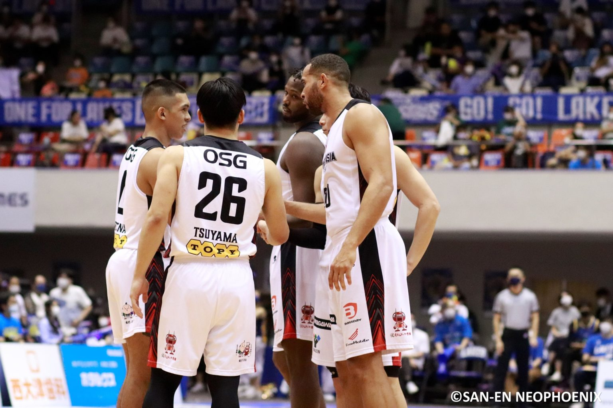

As my last year of secondary school races by, and I am being thrust into what many deem “adulthood”, I can’t help but feel my elementary school self talking to me in the back of my head. A 10 year old me fantasizing a full-fledged contributing member of society in a club of well educated and refined men and women and ending up with what one can only describe as a grown child equipped with a beard and anxiety. The cute and innocent backpack with colorful markers and pens replaced with a knapsack of doubt, stress, and medicinal alcohol. The robust and youthful flame from the candle of life and curiosity slowly burning to an ember of old age and maturity. As a business deal transacts from my former adolescence to my future arthritis prone senility, I feel caught as if I am the middleman, overseeing the terms and conditions of this coming to age agreement that I had no prior knowledge of signing. What is a middleman like me to do? Contractually obligated by the tribe that is humankind to fulfill responsibilities, the middleman does what they are expected to: complete the transaction by accepting the piece of paper, rewarded for my strong efforts in 4 years of college, and merge into the post-graduate, capitalistic, world of adulthood.

Sports is the ultimate metaphor for business. Two teams, pitted against each other for an arbitrary reward, one loser, one winner, a set of disappointed parents and parents who will go to bed satisfied at their offspring’s accomplishments. The idea of two kids in jerseys and baggy shorts fighting for ideal position to throw a round ball into a rounder hoop translates the same into two adults in suits and ties fighting for position to acquire green paper. The reward changes remain the same however: trophies and status. Little league teams with fun names turn into companies with worn out slogans and logos. Coaches turn into bosses and practice turns into paperwork to take home. The theme for both is competition. The motivation may change but the goal is always the same: to win. Only in the game of business, the losers miss out on more than a high five from their coach and a free soda from the concessions. A losing record turns from disappointment and pep talk to debt and emptiness. However, sports is a beautiful thing, it is the only reality show with no script. It can bring out the best and worst and really show what it means to be human.
| Date | Milestone |
|---|---|
| 1965 | First prototype at MIT |